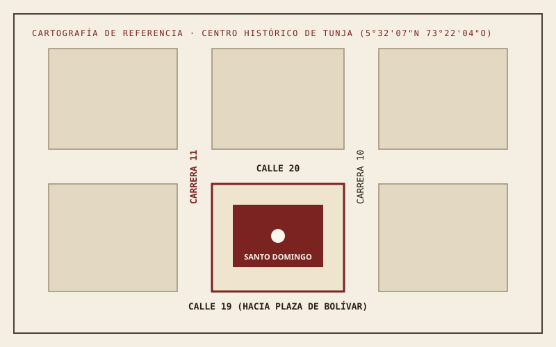

Orientación al Visitante e Investigador
Visita y contacto
Información verificada de localización urbana en el Centro Histórico de Tunja, rutas peatonales de llegada, datos institucionales de referencia y formulario estructurado de consulta.
Ubicación e indicaciones de llegada
Indicaciones para llegar en el Centro Histórico
La Iglesia de Santo Domingo se sitúa a una cuadra al noroccidente de la Plaza de Bolívar de Tunja, sobre la Carrera 11 entre Calles 19 y 20, en el sector peatonal y patrimonial del centro fundacional.
- Desde Plaza de Bolívar
- Ascienda una cuadra hacia el occidente hasta la Carrera 11 y avance media cuadra en sentido norte entre las Calles 19 y 20 (tiempo estimado a pie: 3 minutos).
- Desde Terminal de Tunja
- Tome transporte público urbano o taxi hacia el Centro Histórico (parada cercana a Calle 19 o Calle 20 con Carrera 12) e ingrese a pie una cuadra al oriente hacia la Carrera 11.
- Normas de preservación
- Por tratarse de un recinto de culto activo y Monumento Nacional del siglo XVI, se solicita mantener silencio respetuoso y abstenerse de utilizar flash fotográfico sobre murales y retablos dorados.

Datos de contacto verificados y formulario de consulta
Formulario de consulta
Complete los campos siguientes para estructurar una consulta académica, histórica o de orientación cultural. Los campos marcados con asterisco (*) son obligatorios.